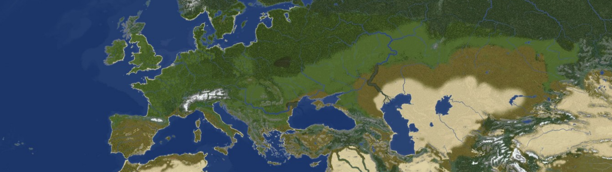
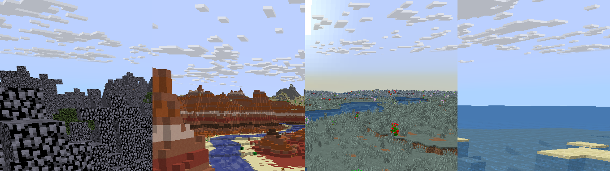

What is OrbisMC?
OrbisMC is a 1.19.4 Towny Earth server, heavily modified from the vanilla experience.
1:900 map of planet Earth
OrbisMC uses a highly detailed map of the Earth with well-picked blocks and biome tints.

Because of this, OrbisMC's map remains highly realistic despite the scale.
Seasons
Unlike other Towny servers, OrbisMC uses a dynamic weather and season system.

This allows for unique weather events and mob encounters.
How to play
Start Minecraft version 1.19.4
Add play.orbismc.com [Copy] to your server list.